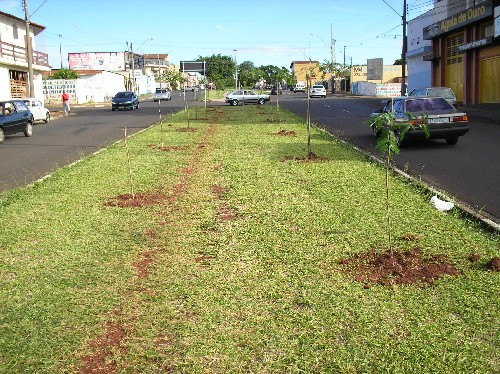
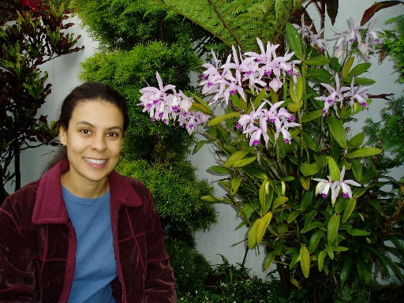
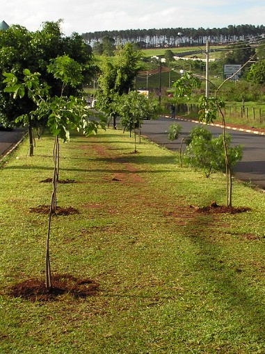
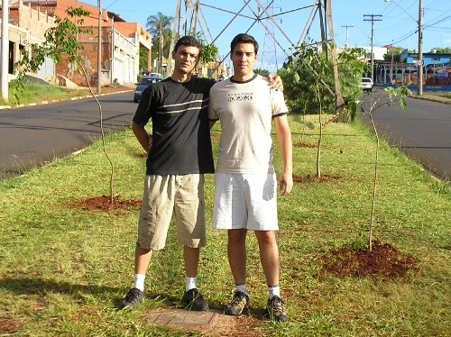
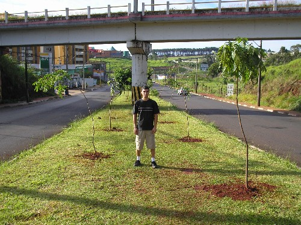
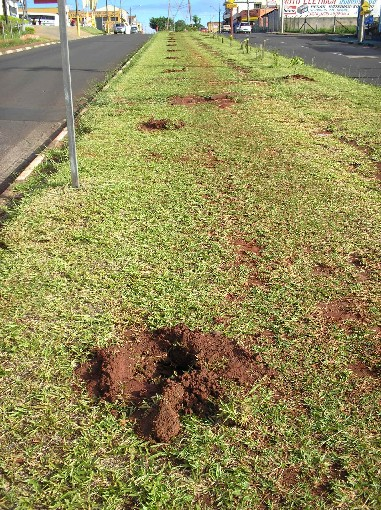
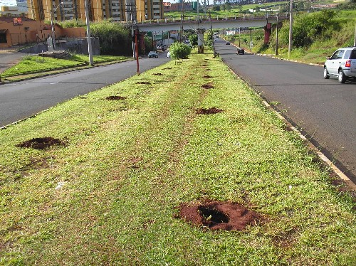
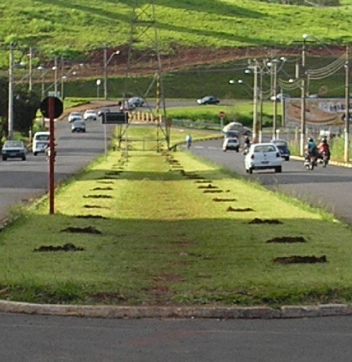

|
Um
ano conturbado e difícil devido aos compromissos, aliado ao longo
período de seca,
fez com que optássemos por realizar os plantios somente no período de
chuvas.
Experiências
anteriores mostraram que os plantios em épocas de seca são pouco
viáveis,
uma vez que o cuidado com as mudas tem que ser minucioso. Infelizmente
nós não dispomos do tempo
necessário para proporcionar que estas mudas plantadas não morram.
Assim,
realizamos o nosso plantio de retorno apenas no mês de
novembro,
e em grande estilo!
Com
o auxílio da APASC e da Secretaria de Desenvolvimento Sustentável de
São Carlos,
organizamos o plantio de 127 mudas de árvores nativas na Av. Tancredo de
Almeida Neves.
Com
a ajuda de um Trator equipado com broca rotativa, fizemos os furos das
127 covas
onde seriam plantadas as mudas.
Na
véspera do plantio, retiramos no Horto Municipal
as primeiras 27 mudas de grande porte (cerca de 2m de altura).
Ao retornarmos ao Horto no dia do plantio para buscar as 100 mudas restantes,
fomos informados que um dos engenheiros
da Secretaria de Obras
da Prefeitura Municipal de São Carlos
havia proibido a liberação das mudas e a execução do plantio.
Decepcionados
com mais atitude negativa, buscamos uma explicação e
fomos informados que não poderíamos plantar pois "...prejudicaríamos a
retirada
das torres de alta tensão desativadas, que estavam no local..."
A
grande ironia é que estas torres já estão desativadas há quase 10 anos!
E, inclusive, o projeto para a retirada destas torres já foi aprovado
há pelo menos 3 anos, mas até então nada sai do papel...
Novamente
esbarramos na burocracia política e fomos impedidos de realizar um plantio VOLUNTÁRIO
num local onde NUNCA houve NENHUM plantio por parte da Prefeitura
Municipal.
O pior é que nós sabemos que estas torres não sairão dali tão cedo...
Neste
meio tempo,
as árvores já estariam proporcionando sombra,
abrigo, beleza, frutos, etc., à toda
população e à fauna local.
Com
toda confusão, acabamos plantando as 27 mudas retiradas na véspera do
plantio,
na mesma avenida, porém em um local longe das torres de alta tensão.
Lamentamos
profundamente a falta de colaboração deste engenheiro.
Pessoas como ele poderiam ser os nossos maiores aliados.
Entretanto, mais uma vez esbarramos na burocracia e na falta de vontade
dos governates da cidade em apoiar um projeto ativo, voluntário e legítimo como o nosso.
Até
quando presenciaremos tamanho retrocesso???
A
resposta é difícil...
Lamentável.
Abaixo estão as fotos do plantio:
|
 |
|
Neste
primeiro quarteirão, plantamos 14 das 27 mudas de grande porte.
A aparência no local mudou imediatamente! |
|
 |
|
Andréa, a nova integrante do
Projeto Plante a Vida,
concedeu-nos a sua valiosa ajuda,
organizando e atuando efetivamente no plantio,
provando que em momentos difíceis é que surgem pessoas especiais! |
|
 |
|
Em
seguida, são plantadas mais 5 mudas
na mesma avenida, preenchendo locais
onde não haviam árvores...
|
|  |
| Fernando e Danilo ao lado de mais 6 mudas plantadas... |
|  |
A
cada muda plantada comemoramos a mudança no local!
Agradecemos a imensa ajuda dada por Fernando neste plantio! |
|  |
A
burocracia na liberação das mudas e na autorização
do plantio fizeram com que mais de 1/6 do trabalho
fosse suspenso. |
|  |
| O
local certamente ficaria muito bonito com todas árvores
plantadas... |
|  |
Infelizmente
a população terá que aguardar a "boa vontade"
política
para poder desfrutar deste local completamente arborizado.
Já estamos negociando a liberação do local
para o plantio das 100 mudas que faltaram... |
Desde
o início do Projeto Plante a Vida encontramos inúmeras pessoas que,
como obstáculos, tentaram nos impedir de plantar árvores.
Felizmente,
devido à nossa força de vontade e determinação, nunca estes problemas
interferiram a ponto de desistirmos do nosso ideal.
Mesmo
com todas as adversidades, manteremos o Projeto Plante a Vida ativo!
Para
tal, contamos com a sua colaboração!
Se
você deseja plantar árvores em sua rua, entre em contato conosco!
Faça
parte de um projeto de conscientização, educação e preservação
ambiental:
Seja
voluntário como nós e participe
do Projeto Plante a Vida!
|